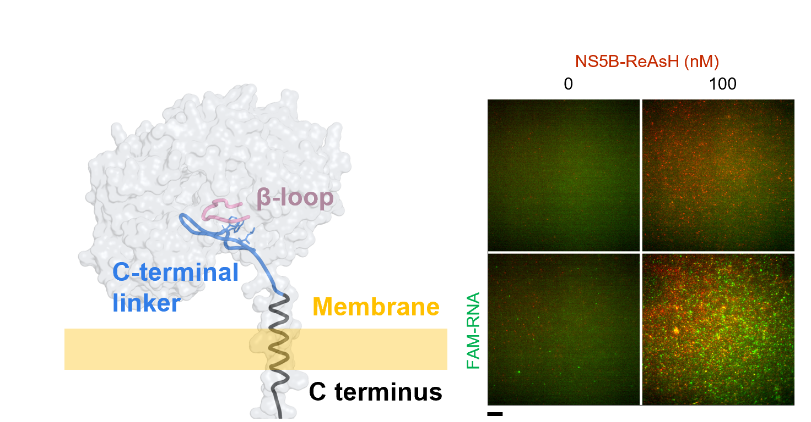

From molecular interactions to collective behavior
How do biological systems switch states?
I study how molecular interactions give rise to biological switches—from the direction of a bacterial motor to the timing of cell division and the assembly of viral proteins on membranes.
My approach combines quantitative microscopy, biochemical reconstitution, and computational analysis to connect molecular mechanisms with biological behavior.
NS5B forms broad, thin assemblies on membrane surfaces.
Research themes
Switches across biological scales
My work connects protein interactions, spatial organization, and nonlinear responses. Three systems have shaped this trajectory.

Membrane tethered NS5B recruits RNA to membrane surfaces.
Membranes & molecular assembly
The membrane as a regulatory environment
In reconstituted membrane systems, I examine how localization changes the assembly and RNA engagement of the hepatitis C virus polymerase NS5B. The work combines TIRF microscopy, FRAP, AFM, and solution biophysics.
Trigger waves of tubulin depolymerization and polymerization in Xenopus extract supplemented with sperm. Afanzar et al., eLife (2020)Open movie directly ↗
Cell cycle & spatial dynamics
A nucleus that sets the pace
Using Xenopus egg extract, I investigated the origin of mitotic waves and showed that the nucleus serves as a pacemaker for the cell cycle. This work connects local biochemical regulation to coordinated behavior across space.
Automated analysis of bidirectional rotation of the bacterial flagellar motor.
Signaling & molecular mechanics
A switch with regulation and flexibility
My doctoral research examined how CheY signaling controls the bacterial rotary motor. Combining microscopy, statistical analysis, and modeling, I studied how tight regulation, flexibility, and ultrasensitivity can arise within one switching mechanism.
I aim to study multicomponent protein systems in native-like environments, with a focus on the organization and function of viral transcription machinery.
Membrane-associated complexes: relate component stoichiometry and spatial organization to biochemical function.
Cell-free platforms: develop quantitative approaches to study complex biochemical reactions outside intact cells.
Sequence to function: connect protein variation with molecular mechanisms and reaction kinetics.
Perez-Cerezales S, Boryshpolets S, Afanzar O, Brandis A, Nevo R, Kiss V, Eisenbach M.
Scientific Reports 5, 16146
Scientific trajectory
About Oshri
My training spans biology, biochemistry, biophysics, and quantitative imaging. I began with genetics and enzymatic reactions, then turned to bacterial signaling, cell-cycle dynamics, protein allostery, and viral membrane systems.
I am interested in finding principles that explain how molecular interactions produce biological behavior. Developing experimental and computational tools has been central to that inquiry.
Stanford University · Priscilla Yang group
Membrane-associated viral polymerase assembly and RNA engagement
UC Berkeley · John Kuriyan group
CaMKII conformations, allostery, and kinetic reporters
Stanford University · James Ferrell group
Cell-cycle regulation and mitotic waves in Xenopus egg extract
Weizmann Institute of Science · Michael Eisenbach group
Doctoral research on bacterial flagellar motor switching
Teaching & scientific dialogue
Learning through inquiry
Mentoring and dialogue are integral to my scientific work. I have mentored technicians, undergraduate and master’s students, doctoral students, and postdoctoral researchers in experimental research, analysis, and scientific communication.
My teaching experience also includes tutoring high-school students in underserved communities and mentoring honors students through experimental projects.
Contact
For conversations about molecular switches, quantitative biochemistry, and research opportunities: